Level plans: unit position on the floor
1. Purpose
This document tells developers how units get a position on a level plan, and how a user changes that position from the unit.
A level plan is one floor drawing. It can serve many floors. Each unit outline on the drawing has a label. Bricly reads the labels and matches each unit to an outline. The user fixes only the units that do not match.
2. Summary of changes
| Area | Before | After |
|---|---|---|
| Edit development → Plans & property views (ED05) | One drawing for each floor. Unit pins at x/y percent. Each new drawing needed a manual check of each unit. | Level plans with a floor range and labelled outlines. Units match automatically. A box lists the units that need placing. |
| Unit drawer → Facade tab | Facade positions only. | Location tab: level plan position and facade positions. |
| Units & availability | No placement status. | An amber chip shows on units that are not on a level plan. |
| Review & publish | No placement check. | A warning lists units that are not placed. Changes show as “Unit positions on level plans”. |
| Present Mode → By floor | Fixed outlines for Miami Tropic. A simple strip for other developments. | Outlines and core from the published level plan. Labels from the drawing. |
| Present Mode → unit → Where it sits | Position from fixed data. | Position label from the level plan. |
3. Terms
| Term | Meaning |
|---|---|
| Level plan | One floor drawing (general arrangement) with unit outlines. It covers a floor range. |
| Floor range | The floors that use the drawing. Example: Typical floor, floors 2–40. |
| Outline | The area of one unit position on the drawing. It has a label, for example 03 or CM1207. |
| Placement | How a unit maps to an outline: automatic, manual, own outline or not on a plan. |
| Own outline | An outline that the user draws for one unit. The shared plan does not change. |
4. Entry points
| Entry point | Use | Function |
|---|---|---|
| Edit development → Plans & property views | Plans, floor range, units that need placing | dePlansHtml() |
| Edit development → Units → unit → Location | Position of one unit | deLocationHtml() |
| Plans & property views → Place or a unit outline | Opens the unit on Location | deLocOpen(unitId) |
| Present → Units and Availability → By floor | Buyer floor view | floorView() in present-v3-brochure.js |
5. Procedure 1 · Check automatic placement
- Open Edit development → Plans & property views.Result: One card shows for each level plan (Figure 1). Each card shows the floor range, version, outlines and units placed.
- Select a plan. If the plan has many floors, select a floor in Show units on.Result: The plan shows the units on that floor.
- Read the Needs placing box.Result: Each unit shows with the reason (Figure 2).
- Open Units & availability.Result: Units that are not placed have an amber chip (Figure 3).
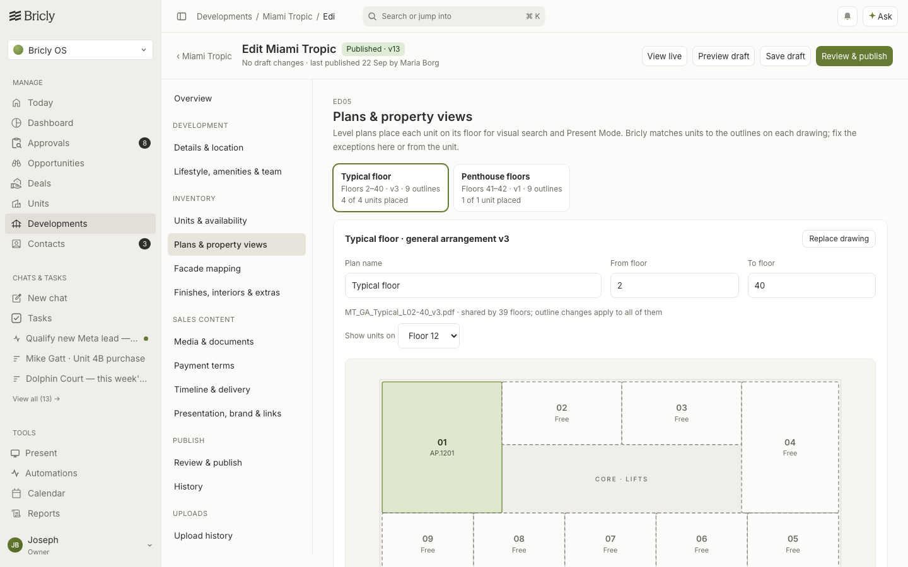
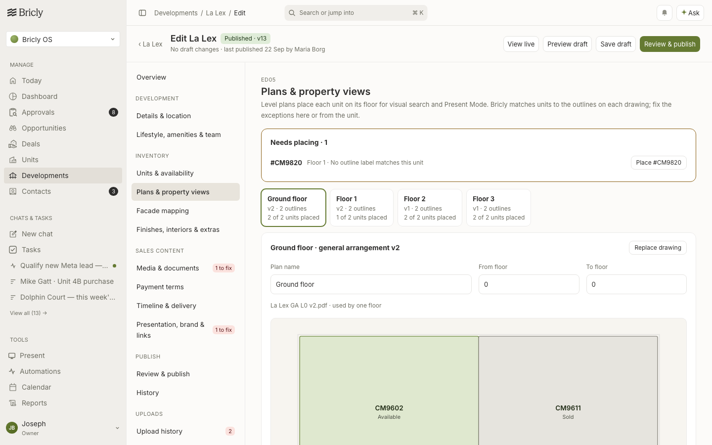
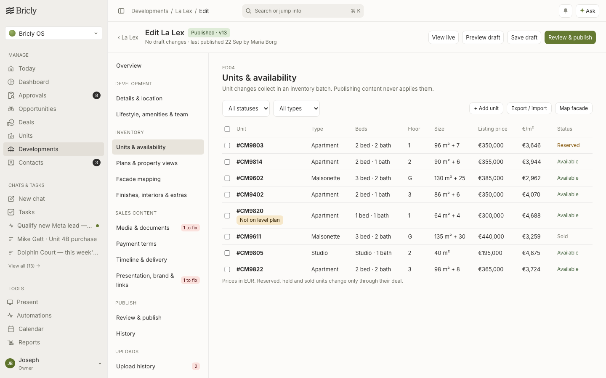
6. Procedure 2 · Place a unit
- Click Place, or open the unit and click Location.Result: The status box shows Needs placing (Figure 4). Dashed outlines are free.
- Click a free outline, or select it in Position.Result: The unit moves to the outline (Figure 5). The status is Set manually, with the name and time.
- Click an outline that has a unit.Result: A note shows the other unit (Figure 6). Click Swap the two units or Cancel.
- Click Draw outline. Drag on the plan (Figure 7).Result: The outline applies to this unit only (Figure 8). The shared plan does not change.
- In Level plan, select Not shown on a level plan. Type a reason. Click Mark as not on a plan.Result: The unit does not show in the floor view (Figure 9).
- Click Reset to automatic.Result: Bricly removes the manual placement. The automatic match applies again.
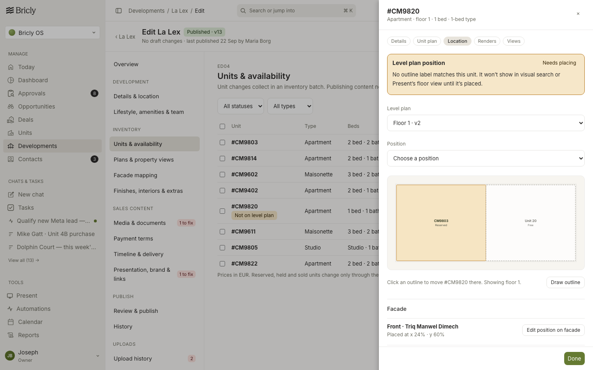
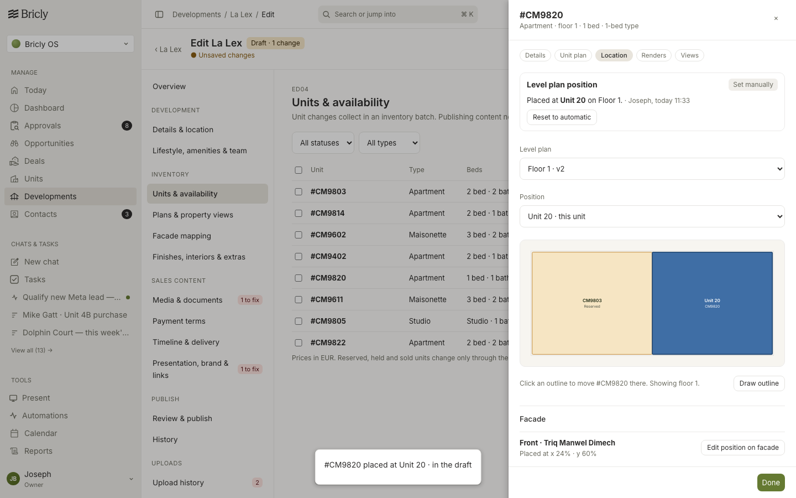
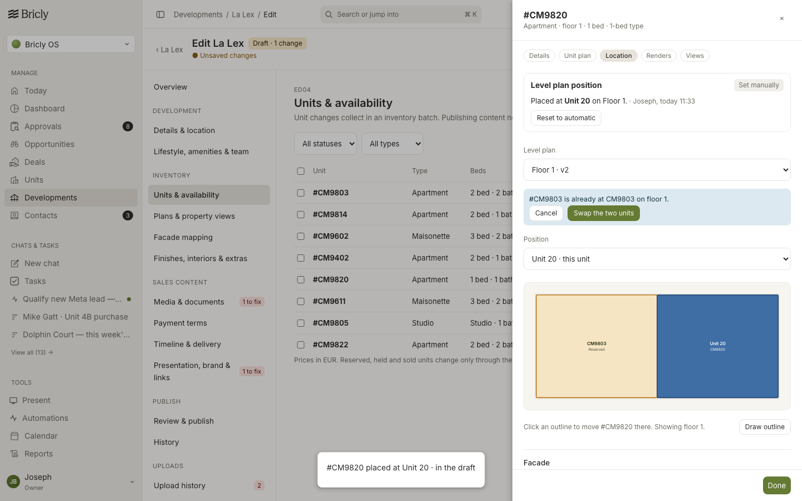
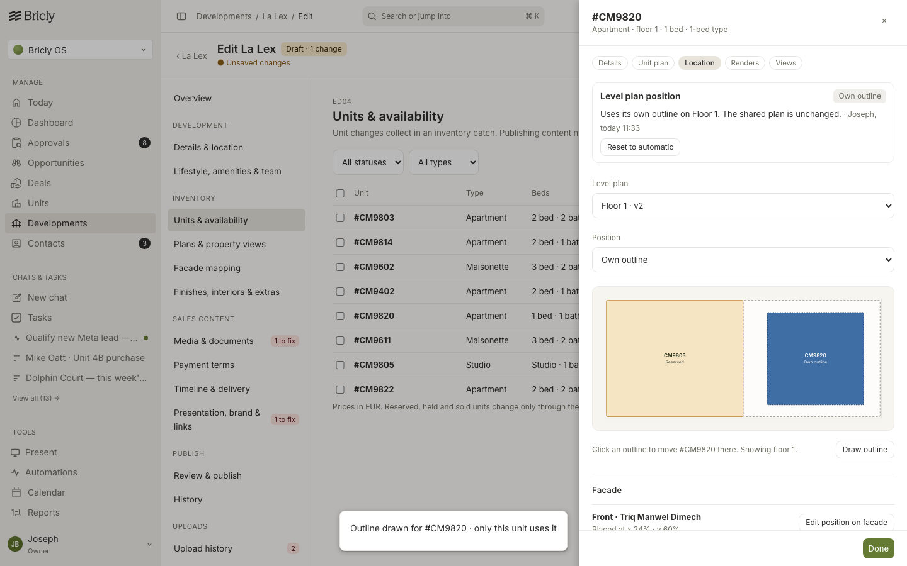
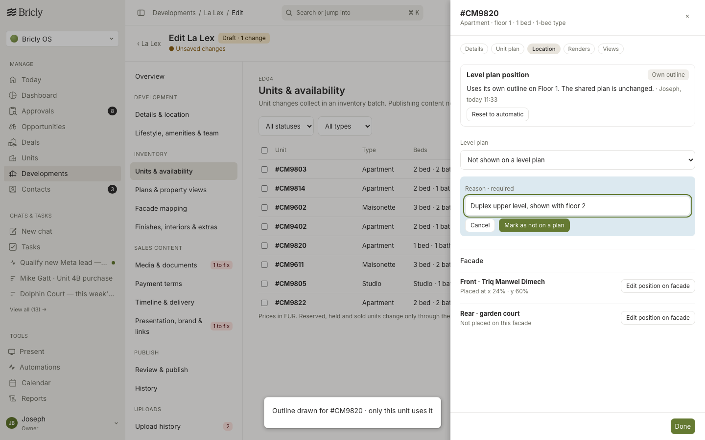
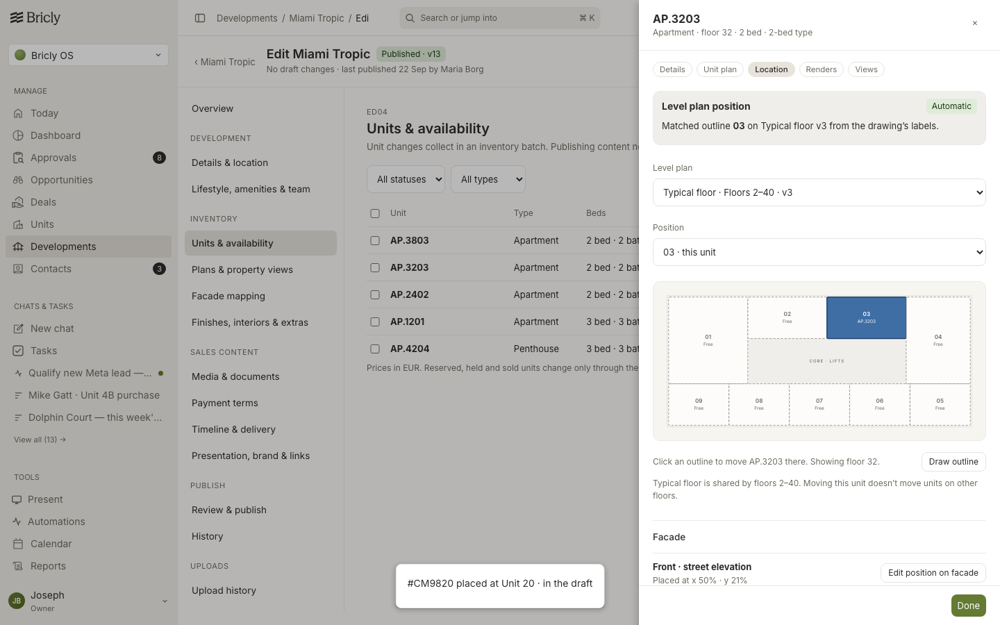
7. Procedure 3 · Plan settings and publish
- On the plan card, change From floor or To floor.Result: Units on those floors match again immediately (Figure 11).
- Click Replace drawing. Select the new file.Result: The version goes up by one. The outlines stay.
- Open Review & publish.Result: A warning lists the units that are not placed (Figure 12). The warning does not block publishing.
- Click Publish.Result: Present Mode uses the new positions.
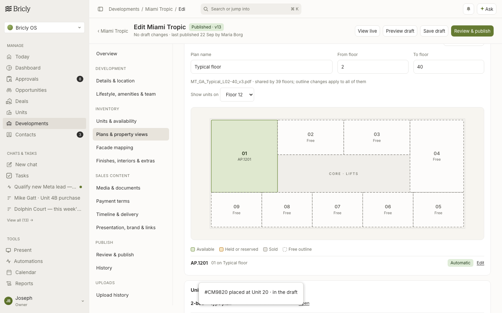
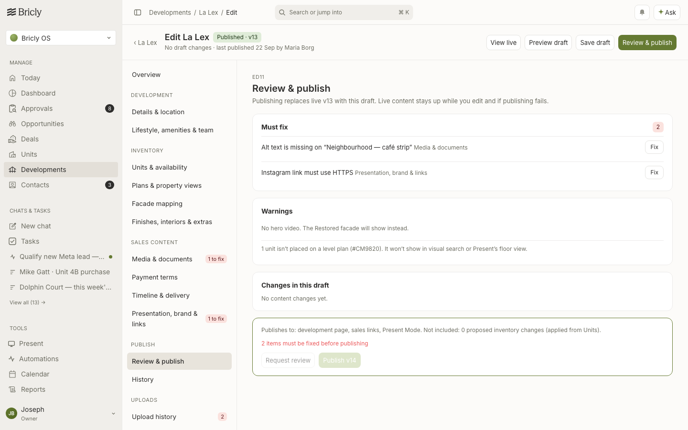
8. Procedure 4 · Present Mode
- Open Present → a development → Units and Availability → By floor.Result: Units show on their outlines (Figure 13). Colour shows the status.
- Select a floor on a shared plan.Result: The same outlines show for each floor in the range (Figure 14). The labels come from the drawing.
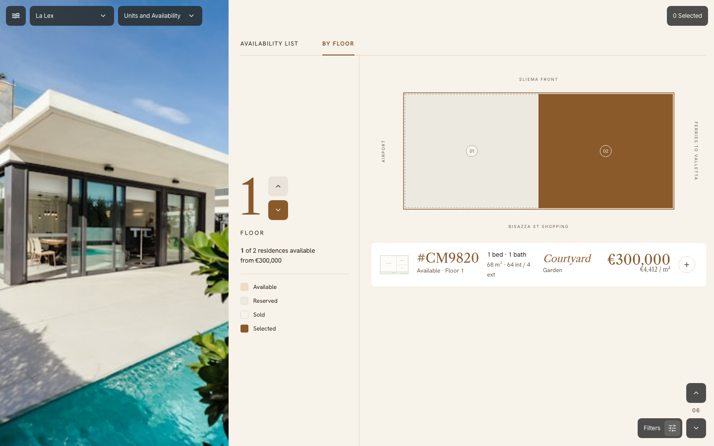
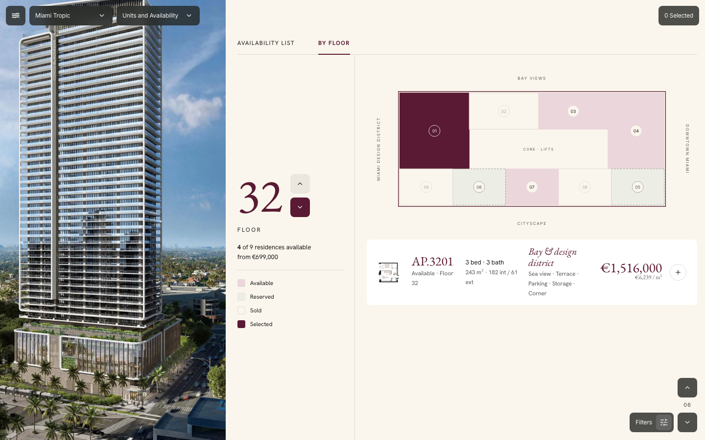
9. Rules
9.1 Automatic match
Function: LP.matches(label, unit). Bricly removes all characters that are not letters or digits, then compares in upper case.
- Match when the label equals the unit reference.
CM1207matches#CM1207. - Match when the reference ends with the two-digit floor number followed by the label.
03on floor 32 matchesAP.3203. - Bricly uses the first plan that covers the unit's floor.
- A manual placement replaces the automatic match.
- One outline holds one unit on each floor. Two units on one outline is a clash.
9.2 Status
| Status | When | Shown in Present |
|---|---|---|
| Automatic | A label matches. | Yes |
| Set manually | The user selected an outline. | Yes |
| Own outline | The user drew an outline. | Yes |
| Not on a plan | The user selected Not shown on a level plan, with a reason. | No |
| Needs placing · no plan | No plan covers the floor. | No |
| Needs placing · no match | No label matches. | No |
| Needs placing · not set | The user selected a plan but no outline. | No |
| Needs placing · clash | Two units use one outline. | First unit only |
| Needs placing · wrong floor | The selected plan does not cover the floor. | No |
10. Data model
| Record | Fields |
|---|---|
levels[] | id, n, from, to, w, h (drawing box), img, ver, file, core ([x, y, w, h] or null), slots[] |
levels[].slots[] | id, label (text on the drawing), r ([x, y, w, h] in the drawing box) |
placements[unitId] | Manual: level, slot. Own outline: level, rect. Not on a plan: none, reason. All: by, at. No record = automatic. |
Both keys are in the development draft. They publish with the content, not with the inventory batch. Present scales the drawing box to its 880 × 420 plate (LP.toPlate).
11. Files and functions
All files are in prototypes/v3/.
| File | Change |
|---|---|
level-plans.js (new) | The model. LP.seed, matches, levelsFor, own, floor (placements for one floor, with clash check), place, issues, occupant, toPlate. |
dev-editor.js | Plan canvas deLvlSvg. ED05 dePlansHtml, deLvlSet, deLvlReplace. Location tab deLocationHtml, deLocPick, deLocSwap, deLocLevel, deLocNone, deLocDraw, deLocSave. Units chip and publish warning. |
dev-editor.css | Plan canvas, status colours, Location status box. |
present-v3-data.js | plate, levelOf, position read the live level plans. |
present-v3-brochure.js, present-v3-unit.js | By floor uses the plan outlines and core. Where it sits uses the position label. |
12. Test procedure
npx playwright test tests/present-v3.spec.cjs -g "Level plans" --reporter=line
| Test | Checks |
|---|---|
| Level plans: units match outlines automatically, exceptions are placed from the unit, Present reads the result | Automatic match, Needs placing, place, swap, reset, draw outline, publish, Present plate. |
To make the screenshots again, start a static server at the repository root on port 4310. Then use this command:
NODE_PATH=<repo>/node_modules node docs/handoff/level-plans/capture.cjs
13. Open items
| Item | Status |
|---|---|
| Upload flow: detect outlines, read labels, match units, show the result before saving. | Next update |
Development → Availability → Floor plans and the Add unit wizard use the old pin model (d.floorPlans). Move them to level plans. | Not changed |
| A user cannot change the shape of a shared outline. A user can draw an outline for one unit. | Decision necessary |
| Units that are not placed give a warning. Decide if they block publishing. | Decision necessary |
| Outlines are rectangles. L-shaped units need polygons. | Decision necessary |
| Miami Tropic has 5 units in the CRM. Other outlines show as free in the editor. Present shows all units. | Prototype limit |